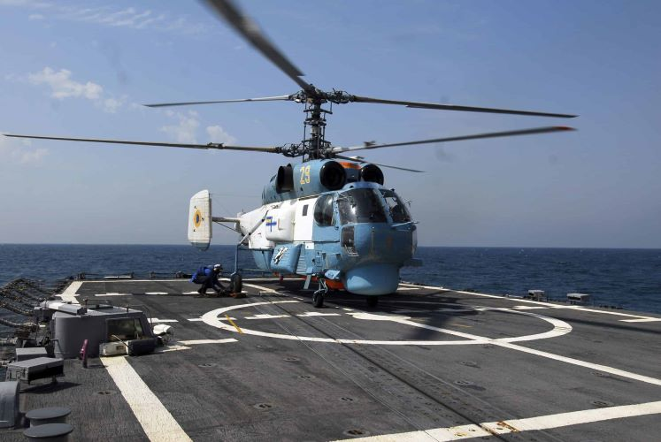

Ка-27
Ка-27(Helix за класифікацією НАТО)
Ка-27 радянський корабельний багатофункціональний вертоліт
Корабельний протичовновий вертоліт типу Ка-27/28 призначений для вирішення завдань протичовнової оборони флоту з базуванням на кораблях різного класу. Він здатний виявляти сучасні підводні човни та надводні цілі, передавати дані про них на корабельні і берегові пункти, а також атакувати їх з застосуванням бортових засобів ураження.
Призначений для пошуку, відстеження та ураження підводних човнів у підводному і надводному положеннях, в денний і нічний час, у простих і складних метеоумовах на глибинах їх занурення до 500 метрів і швидкостях ходу до 75км/год, у районах, віддалених від місця базування вертольота до 200км. Оснащений радіолокаційною прицільно-пошуковою системою «Восьминіг», гідроакустичною відкидною станцією, магнетометром.
Може нести касети з гідроакустичними буями, торпеди, глибинні і орієнтирні бомби. Зазначені завдання виконуються при польотах з сухопутних аеродромів і з палуби корабля при хвилюванні моря до 5 балів.
Один вертоліт Ка-27 базується на фрегаті «Гетьман Сагайдачний».